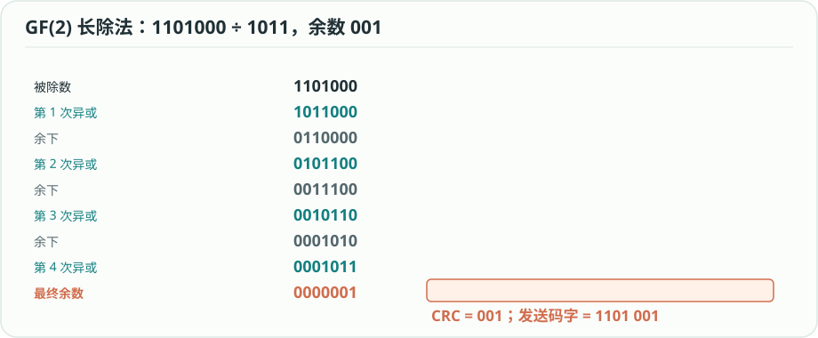
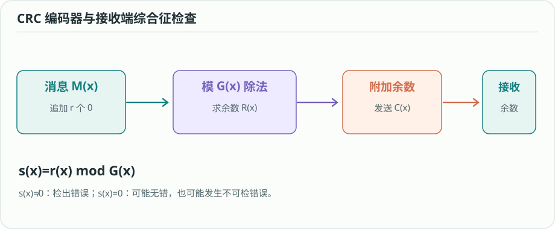
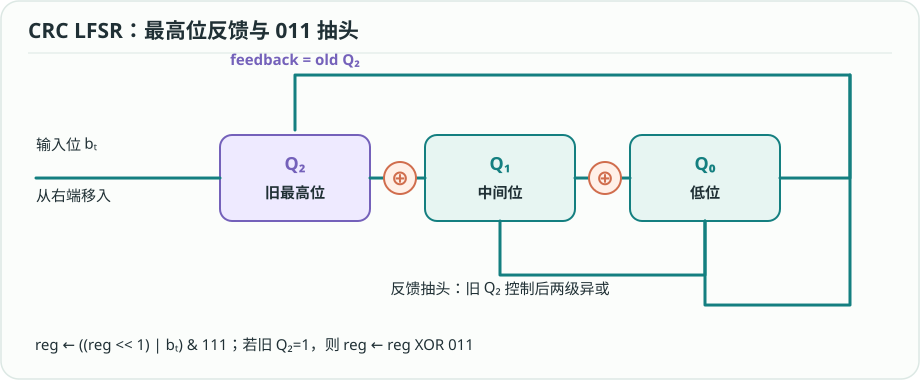

<!doctype html><html lang="zh-CN"><head><meta charset="utf-8"><meta name="viewport" content="width=device-width,initial-scale=1"><meta name="description" content="从 GF(2) 多项式、循环码生成理想到 CRC 综合征与标准参数，逐步推导检错保证，并用可执行测试区分教学版和 CRC-32/ISO-HDLC。"><title>第 16 章 · 循环码与 CRC：多项式除法如何检错 | 信息论</title><link rel="stylesheet" href="../assets/css/site.css"><script defer src="../assets/js/site.js"></script></head><body><a class="skip-link" href="#content">跳转至正文</a><header class="top"><a class="brand" href="../index.html">信息论 / INFORMATION THEORY</a><nav aria-label="课程导航"><a href="../index.html">课程首页</a><a href="../index.html#chapters">全部章节</a></nav></header><div class="layout"><nav class="toc" aria-label="本章目录"><strong>第 16 章 · 循环码与 CRC：多项式除法如何检错</strong><a href="#problem">为什么一个短小的余数能检查很长的数据帧？</a><a href="#cyclic">循环码：在 GF(2)[x]/(xⁿ−1) 中乘以 x</a><a href="#crc">系统 CRC：让“数据 + 余数”成为可整除的码字</a><a href="#guarantees">CRC 的检错能力来自多项式因式关系</a><a href="#standards">CRC-32 的多项式还不足以定义一个完整标准</a><a href="#lfsr">LFSR：把多项式除法变成寄存器更新</a><a href="#implementation">可运行实现：教学多项式与标准 CRC-32 分开测试</a><a href="#limits">CRC 的工程边界：覆盖范围和协议语义同样重要</a><a href="#sources">来源与延伸阅读</a></nav><main id="content"><article><header class="article-header"><p class="chapter-label">CYCLIC CODES &amp; CRC / CHAPTER 16</p><h1>循环码与 CRC：多项式除法如何检错</h1><p class="dek">从 GF(2) 多项式、循环码生成理想到 CRC 综合征与标准参数，逐步推导检错保证，并用可执行测试区分教学版和 CRC-32/ISO-HDLC。</p></header><div class="article-body"><section id="problem" aria-labelledby="s-problem"><h2 id="s-problem">为什么一个短小的余数能检查很长的数据帧？</h2><p>把一串比特看成 GF(2) 上的多项式，异或就是多项式加法。发送端不是逐位复制一份数据，而是附加一个由生成多项式决定的余数，使完整码字满足一个可检验的整除条件。接收端只需重新计算余数，就能检测大量传输错误。</p><p>CRC 的强项是<strong>检错</strong>而非纠错：非零余数证明接收序列不符合码约束；零余数则只说明错误没有被该 CRC 检出。攻击者可以修改消息并重新计算 CRC，因此 CRC 也不是消息认证码。</p><div class="note">本章区分三层对象：循环码是 GF(2) 上的线性分组码子类；CRC 是利用多项式余数进行检错的编码规则；某个 CRC 标准还必须指定位序、初值、最终异或等参数。</div></section><section id="cyclic" aria-labelledby="s-cyclic"><h2 id="s-cyclic">循环码：在 GF(2)[x]/(xⁿ−1) 中乘以 x</h2><p>长度 n 的二进制循环码是一个线性码，并且任一码字的循环移位仍属于该码。若把码字表示成 (c(x)=c_0+c_1x+cdots+c_{n-1}x^{n-1})，乘以 x 后对 (x^n-1) 取模，就恰好把最高次项绕回常数项。</p><div class="math-equation" role="group" aria-label="循环移位对应在商环中乘以 x"><div class="math-scroll" tabindex="0" role="region" aria-label="循环移位对应在商环中乘以 x，可横向滚动"><math display="block" aria-label="循环移位对应在商环中乘以 x"><mi>c</mi><mo>'</mo><mo>(</mo><mi>x</mi><mo>)</mo><mo>=</mo><mi>x</mi><mi>c</mi><mo>(</mo><mi>x</mi><mo>)</mo><mo>mod</mo><mo>(</mo><msup><mi>x</mi><mi>n</mi></msup><mo>−</mo><mn>1</mn><mo>)</mo></math></div><div class="eq-label">(16.1)</div></div><p>每个二元长度 n 循环码都有一个唯一的首一生成多项式 g(x)，它整除 (x^n-1)，次数为 n−k。所有码字都能写成 (c(x)=m(x)g(x))，其中 (deg m&lt;k)。因此循环码的结构不仅是一个校验矩阵，还可以用一个多项式生成理想来描述。</p><p>例如 (g(x)=x^3+x+1) 整除 (x^7+1)，可生成一个 (7,4) 循环码。它与上一章的 Hamming(7,4) 码有相同参数，但编码位序、生成矩阵表示需要明确；“同参数”不代表可以混用任意编码约定。</p></section><section id="crc" aria-labelledby="s-crc"><h2 id="s-crc">系统 CRC：让“数据 + 余数”成为可整除的码字</h2><p>设生成多项式 G(x) 的次数为 r，常数项为 1。给消息多项式 M(x) 追加 r 个零，相当于计算 (x^rM(x))。将其除以 G(x)，得到次数小于 r 的余数 R(x)，然后发送 (C(x)=x^rM(x)+R(x))。在 GF(2) 中减法与加法相同，所以 C(x) 能被 G(x) 整除。</p><div class="math-equation" role="group" aria-label="系统 CRC 码字由移位消息与模除余数构成"><div class="math-scroll" tabindex="0" role="region" aria-label="系统 CRC 码字由移位消息与模除余数构成，可横向滚动"><math display="block" aria-label="系统 CRC 码字由移位消息与模除余数构成"><mi>C</mi><mo>(</mo><mi>x</mi><mo>)</mo><mo>=</mo><msup><mi>x</mi><mi>r</mi></msup><mi>M</mi><mo>(</mo><mi>x</mi><mo>)</mo><mo>+</mo><mi>R</mi><mo>(</mo><mi>x</mi><mo>)</mo><mo>,</mo><mspace width="1em"/><mi>R</mi><mo>=</mo><msup><mi>x</mi><mi>r</mi></msup><mi>M</mi><mo>mod</mo><mi>G</mi></math></div><div class="eq-label">(16.2)</div></div><p>采用最高位先行的简单教学约定，取 G=1011（即 (x^3+x+1)）、消息 1101。追加三个零得到 1101000；GF(2) 长除法的余数是 001，所以发送码字为 <code>1101001</code>。对整个码字除以 1011，余数为 000。</p><figure><figcaption>每一步只在当前最高位为 1 的位置对齐生成多项式；这里的 bit string 采用最高次项在左的约定。</figcaption></figure><p>接收端对收到的整个多项式 r(x) 计算综合征 (s(x)=r(x)mod G(x))。非零综合征可检出错误；综合征为零并不证明数据一定正确，因为某些错误多项式本身也可能被 G 整除。</p><figure><figcaption>发送和接收两端必须对完全相同的帧字段、位序和填充约定执行算法；长度、地址或校验字段边界配置错误会破坏端到端检查。</figcaption></figure></section><section id="guarantees" aria-labelledby="s-guarantees"><h2 id="s-guarantees">CRC 的检错能力来自多项式因式关系</h2><p>若发送码字 C(x) 被 G(x) 整除，接收时发生错误多项式 E(x)，则 r(x)=C(x)+E(x)。由于 C(x) mod G(x)=0，错误漏检当且仅当 (E(x)) 也能被 G(x) 整除。</p><div class="math-equation" role="group" aria-label="CRC 漏检错误的充要条件"><div class="math-scroll" tabindex="0" role="region" aria-label="CRC 漏检错误的充要条件，可横向滚动"><math display="block" aria-label="CRC 漏检错误的充要条件">G<mo>(</mo><mi>x</mi><mo>)</mo><mo>|</mo><mi>E</mi><mo>(</mo><mi>x</mi><mo>)</mo></math></div><div class="eq-label">(16.3)</div></div><p>若 G 的次数为 r 且常数项为 1，则：</p><ul><li>所有单比特错误都能检出；</li><li>所有长度不超过 r 的非零突发错误都能检出，因为其错误多项式次数小于 r；</li><li>若 G(x) 含因子 x+1，则所有奇数个比特翻转也能检出；</li><li>更长突发错误或特定间距的多比特错误，是否漏检取决于 G 的因式结构和帧长。</li></ul><figure><figcaption>长度 4 的某些突发错误可能检出，但不能从“r=3”推出全部长度 4 突发错误必定检出。</figcaption></figure><p>“随机漏检概率约为 (2^{-r})”是对综合征近似均匀、错误模式近似随机等模型的工程估计，不是对任意错误分布的无条件定理。若错误来自软件缺陷、固定偏移或恶意构造，不能套用随机概率估算。</p></section><section id="standards" aria-labelledby="s-standards"><h2 id="s-standards">CRC-32 的多项式还不足以定义一个完整标准</h2><p>以 CRC-32/ISO-HDLC 为例，参数为 width=32、poly=0x04C11DB7、init=0xFFFFFFFF、RefIn=true、RefOut=true、xorout=0xFFFFFFFF；对 ASCII 字符串 <code>123456789</code> 的 check 值为 <code>0xCBF43926</code>。反射实现右移时常使用反射多项式 <code>0xEDB88320</code>。</p><p>两个程序即使写着“CRC-32”，若初值、输入反射、输出反射或 xorout 不同，结果也可能不同。把多项式的最高项省略写成十六进制参数，是常见的标准记法，不代表最高项在数学定义中不存在。</p><div class="note warning">CRC 只提供偶然错误检测。对抗主动篡改应使用带密钥的 MAC 或认证加密（AEAD），不能把 CRC 当成安全校验。</div></section><section id="lfsr" aria-labelledby="s-lfsr"><h2 id="s-lfsr">LFSR：把多项式除法变成寄存器更新</h2><p>CRC 的长除法可以由线性反馈移位寄存器（LFSR）逐位执行。对本章 MSB-first 的 G=1011，寄存器宽度 r=3，去掉生成多项式的最高项后，反馈掩码为 011。每次读入一个消息位，先把旧寄存器最高位取作反馈，再左移并移入新位；若反馈为 1，就对寄存器异或 011。</p><pre><code>reg = 0
mask = 0b111
poly_low = 0b011
for bit in message + "000":       # 追加 r 个零
    feedback = (reg >> 2) & 1     # 旧最高位
    reg = ((reg << 1) | int(bit)) & mask
    if feedback:
        reg ^= poly_low
# reg = 0b001，即 CRC 余数</code></pre><p>对消息 1101，依次送入 1101 和三个补零，寄存器状态依次为 001、011、110、110、111、101、001。这里的“左移、最高位反馈、输入位从右侧进入”是一套明确的位序约定；反射 CRC 实现会使用相反方向的移位和相应反射多项式，不能只把移位符号改掉而保留原抽头。</p><figure><figcaption>G(x)=x³+x+1 对应三个寄存器级与反馈抽头。旧最高位决定是否对低三位掩码 011 异或；这与前面的多项式长除法逐步同构。</figcaption></figure></section><section id="implementation" aria-labelledby="s-implementation"><h2 id="s-implementation">可运行实现：教学多项式与标准 CRC-32 分开测试</h2><p>教学版函数使用 MSB-first、init=0、xorout=0 的简单多项式长除法；标准 CRC-32/ISO-HDLC 则使用反射输入/输出和非零初值。两种实现分别验证，避免把简化伪代码误当成标准兼容实现。</p><pre><code>from examples.advanced_information import (
    crc_encode, crc_remainder, crc_lfsr_remainder, crc32_iso_hdlc
)
codeword = crc_encode("1101", "1011")
assert codeword == "1101001"
assert crc_remainder(codeword, "1011") == "000"
assert crc_lfsr_remainder("1101", "1011") == "001"
assert crc32_iso_hdlc(b"123456789") == 0xCBF43926
print(codeword, hex(crc32_iso_hdlc(b"123456789")))</code></pre><div class="lab" data-lab="crc-syndrome"><label for="lab16">翻转教学码字中的一个位置（0 表示不翻转）</label><input id="lab16" type="range" min="0" max="7" step="1" value="5"><output for="lab16" aria-live="polite">翻转位置 5：收到 1101101；综合征 101，检测到错误</output><p class="micro">发送码字 1101001，生成多项式 1011。这里只演示单比特错误综合征，不模拟所有 CRC 标准的反射和初值参数。</p></div></section><section id="limits" aria-labelledby="s-limits"><h2 id="s-limits">CRC 的工程边界：覆盖范围和协议语义同样重要</h2><p>CRC 计算覆盖哪些字段、长度字段是否包含在校验范围、帧头与填充位如何处理、比特以何种顺序进入寄存器，都是协议的一部分。一次可靠的校验实现应以标准给出的测试向量为准，而不是只比较两个程序对某个自选样本是否相同。</p><p>CRC 也不会自动修复数据；检测到错误后，协议需要另行决定重传、丢帧或上层恢复。对文件存储而言，CRC 能发现偶发损坏，但若还需抵抗恶意替换，应使用数字签名或认证哈希体系。</p></section><section id="sources" aria-labelledby="s-sources"><h2 id="s-sources">来源与延伸阅读</h2><ol class="references"><li><a href="https://reveng.sourceforge.io/crc-catalogue/all.htm">CRC RevEng Catalogue</a>：CRC-32/ISO-HDLC 的完整参数、check 与 residue。</li><li><a href="https://reveng.sourceforge.io/readme.htm">CRC RevEng README</a>：多项式、反射、初值和 xorout 参数约定。</li><li><a href="https://www.rfc-editor.org/rfc/rfc1662.html">RFC 1662, PPP in HDLC-like Framing</a>：PPP 帧 FCS 的 CRC 参数与线上处理。</li><li><a href="https://ieeexplore.ieee.org/abstract/document/4066263/">W. W. Peterson &amp; D. T. Brown, Cyclic Codes for Error Detection</a>（DOI: 10.1109/JRPROC.1961.287814）：循环码检错理论。</li></ol></section></div><nav class="chapter-nav" aria-label="相邻章节"><a href="15.html">← 第 15 章</a><a href="17.html">第 17 章 · 卷积码与 Viterbi 译码 →</a></nav></article></main></div></body></html>